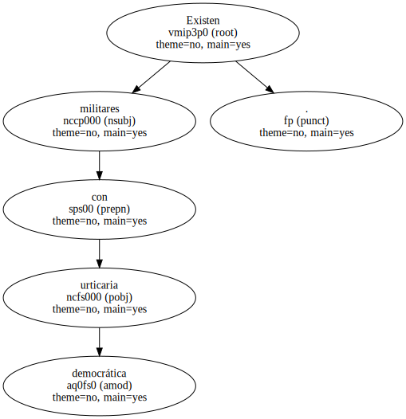
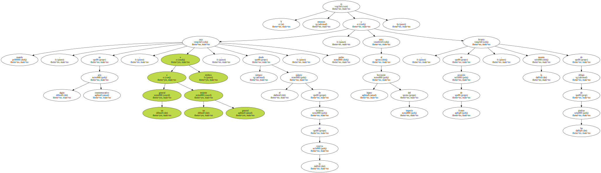
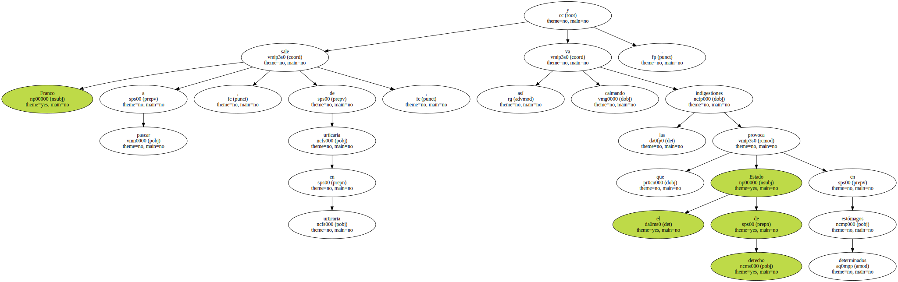
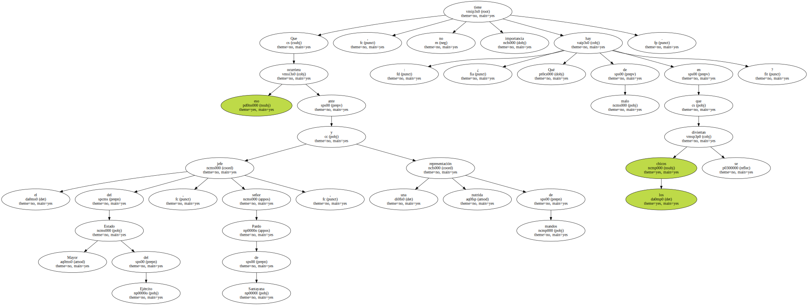
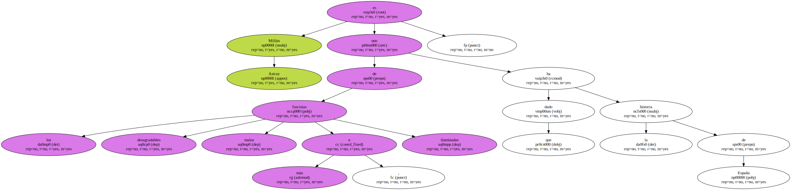
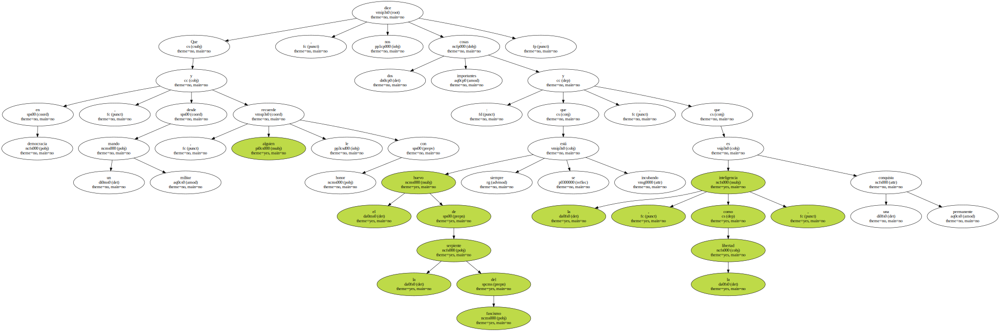
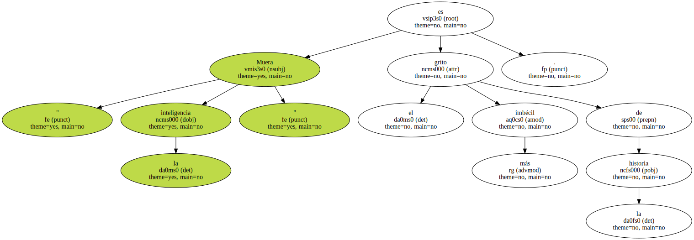

Existen militares con urticaria democrática.
Los pobres , en adolescencia franquista permanente , sufren cíclicamente una crisis tal de angustia - - la sobredosis de la libertad - - , que necesitan aflojar la bragueta dialéctica.
Y es entonces cuando , en algún acto conmemorativo , un general o un teniente general o etcétera , siempre desde el palacio de invierno de la reserva , saca pecho , mira al horizonte lejano del imperio y , en posición de firmes , levanta la momia de debajo de las piedras.
Franco sale a pasear , de urticaria en urticaria , y así va calmando las indigestiones que provoca el Estado de derecho en determinados estómagos.
Ahora le ha tocado al teniente general Agustín Muñoz Grandes protagonizar esta bella escena de furor uterino-patriótico ( ¿ o hay que decir furor prostático ? ) , y en un momento de iluminada nostalgia , entre elogios a Franco , ha ensalzado con entusiasmo a Millán Astray.
Que eso ocurriera ante el jefe del Estado Mayor del Ejército , señor Pardo de Santayana , y una nutrida representación de mandos , no tiene importancia : ¿ Qué hay de malo en que los chicos se diviertan ?.
Personalmente , me ha parecido de una especial significación que el hombre que lanzó el simpático grito de " Muera la inteligencia " , sea recordado en momentos tan trágicos justamente para la ilustración y la inteligencia.
Millán Astray es uno de los fascistas más desagradables , malos e iluminados que ha dado la historia de España.
Que en democracia , y desde un mando militar , alguien le recuerde con honor , nos dice dos cosas importantes : que el huevo de la serpiente del fascismo siempre se está incubando , y que la inteligencia , como la libertad , es una conquista permanente.
Hay militares que no han entendido nada , no han digerido nada y , sobre todo , no han asumido nada , impermeables a una historia que con esfuerzos se ha reescrito a sí misma.
Estando en la reserva , y coherentes , sorprende cómo además se empeñan en ser ellos la reserva tronada del franquismo irredento.

" Muera la inteligencia " es el grito más imbécil de la historia.
Agustín Muñoz Grandes y quienes admiran al prohombre que lo pronunció pueden estar contentos : no hay duda de que están a la altura de tan gloriosa imbecilidad.